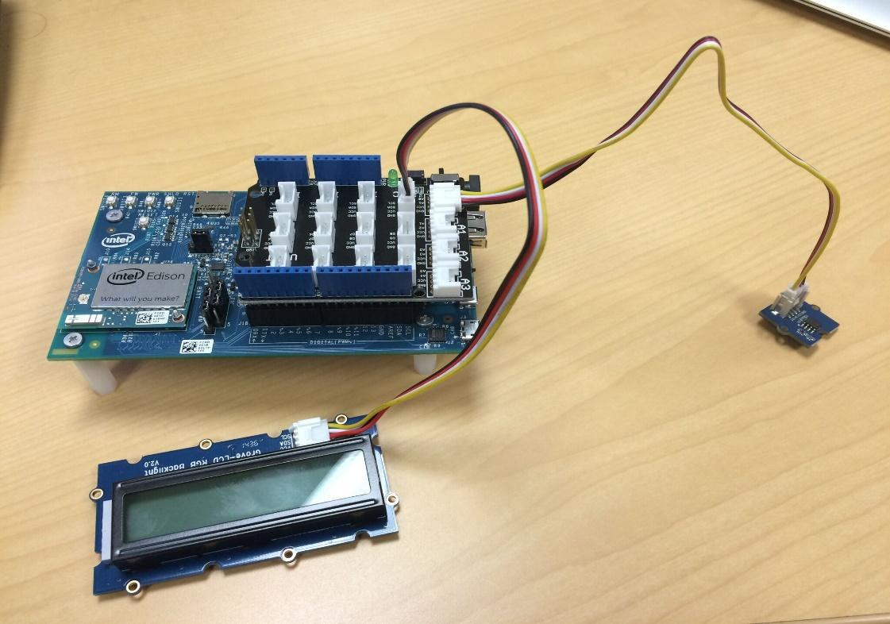
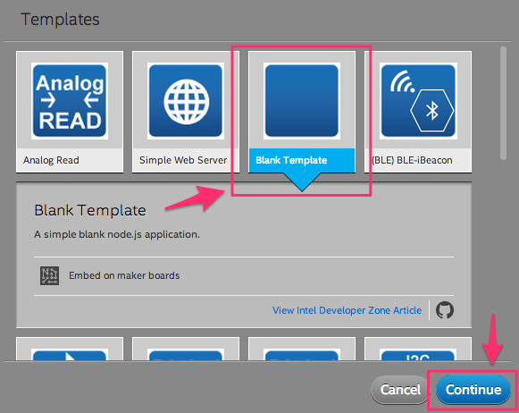
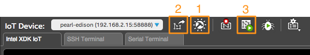
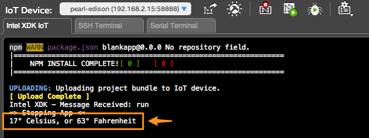

Exercise: Temperature Sensor and LCD
Get set up
-
Install the Grove Base Shield onto the Intel® Edison Arduino expansion board.
Connect Grove Temperature Sensor to analog pin A0 of the Grove Base Shield.
Connect Grove LCD display to one of the I2C pins.

-
Start a new project in the Intel® XDK using a blank template.
If you have an Intel® XDK project already open, click on the projects drop down menu in the upper left hand corner, then select New Project.

Choose Blank Template from the list of templates, then click Continue.

-
The Intel® XDK will create and open main.js for you with this default JavaScript:
/*jslint node:true, vars:true, bitwise:true, unparam:true */ /*jshint unused:true */ // Leave the above lines for propper jshinting //Type Node.js Here :)
Read the temperature sensor
Update main.js to read the temperature sensor on program start up and log it to the console.
-
Include the JS UPM library for the basic Grove sensors.
var groveSensor = require('jsupm_grove'); -
Instantiate a
GroveTempGrove Sensor on analog pin 0.var temp = new groveSensor.GroveTemp(0); -
Read the value of the
GroveTempobject you just created.var celsius = temp.value(); -
If desired, convert the Celsius value to Fahrenheit using the standard conversion formula.
var fahrenheit = Math.round(celsius * 9.0/5.0 + 32.0); -
Finally, output the value of the temperature sensor.
console.log(celsius + "° Celsius, or " + fahrenheit + "° Fahrenheit"); -
The final code should look like this:
/*jslint node:true, vars:true, bitwise:true, unparam:true */ /*jshint unused:true */ var groveSensor = require('jsupm_grove'); var temp = new groveSensor.GroveTemp(0); var celsius = temp.value(); var fahrenheit = Math.round(celsius * 9.0/5.0 + 32.0); console.log(celsius + "° Celsius, or " + fahrenheit + "° Fahrenheit"); -
Make sure your changes to main.js have been saved and use the buttons at the bottom of the Intel® XDK to:
(1) Build your application,
(2) Upload it to Intel® Edison, and
(3) Run the application.
-
If successful, you should see the temperature output in the Intel® XDK console.

Add polling
Currently the temperature sensor is only read on application start. Add a JavaScript setInterval to regularly poll the sensor every second (1000 miliseconds).
If you are not familiar with JavaScript, the format should look similar to this:
function monitor() {
setInterval(function() {
// code to repeat goes here
}, 1000);
}
monitor();
-
Try incorporating the
setIntervalcallback with the code you wrote in Read the temperature sensor before scrolling down for the solution.Write your own code now.
Don't peek unless you're stuck! ;)|Ready?
-
With polling, the exercise code should look like this:
var groveSensor = require('jsupm_grove'); var temp = new groveSensor.GroveTemp(0); function monitor() { setInterval(function() { var celsius = temp.value(); var fahrenheit = Math.round(celsius * 9.0/5.0 + 32.0); console.log(celsius + "° Celsius, or " + fahrenheit + "° Fahrenheit"); }, 1000); } monitor();
Add the LCD screen
Update main.js to output the value from the temperature sensor to the LCD display.
Below are the general steps to complete the exercise.
-
Similar to using
require('jsupm_grove')to include the JavaScript UPM library for the basic Grove components, include the UPM library for I2C-type LCDs:var LCD = require('jsupm_i2clcd'); -
The specific LCD you have is the JHD1313M1 Grove RBG LCD. Instantiate a new
LCD.Jhd1313m1object. The constructor accepts 3 parameters in this order:- I2C bus (Number)
- For the Intel Edison, use
0. - lcdAddress (Number)
- The JHD1313M1 has two I2C addreses: this address identifies the LCD display. Use
0x3E. - rgbAddress (Number)
- The JHD1313M1 has two I2C addreses: this address identifies the RGB backlight. Use
0x62.
-
To write to the LCD, you need to:
- First, set the cursor position.
e.g.(0,0)for the top left. The JHD1313M1 has 2 rows (y) and 16 columns (x). - Then, write a string/message to the screen.
e.g."Temp: " + celsius + "C or " + fahrenheit + "F"
The API documentation for generic I2C LCDs can be found here: http://iotdk.intel.com/docs/master/upm/node/classes/lcd.html#methods
- First, set the cursor position.
-
As a bonus, you can change the LCD backlight color.
e.g.(255,255,255)for white.The API documentation for the specific Grove RBG LCD you have can be found here: http://iotdk.intel.com/docs/master/upm/node/classes/jhd1313m1.html#methods
-
Use the steps and reference links above to output the value from the temperature sensor to the LCD display.
Write your own code now.
Don't peek unless you're stuck! ;)|Ready?
-
Below is an example of the final solution.
// Include the JavaScript UPM libraries var groveSensor = require('jsupm_grove'); var LCD = require("jsupm_i2clcd"); // Create a new instance of a Grove Temperature Sensor var temp = new groveSensor.GroveTemp(0); // Create a new instance of a Grove RGB LCD screen var screen = new LCD.Jhd1313m1(6, 0x3E, 0x62); function monitor() { setInterval(function() { // Read the temperature sensor var celsius = temp.value(); var fahrenheit = Math.round(celsius * 9.0/5.0 + 32.0); console.log(celsius + "° Celsius, or " + fahrenheit + "° Fahrenheit"); // Update the LCD screen screen.setCursor(0, 0); screen.setColor(255, 255, 255); screen.write("Temp: " + celsius + "C or " + fahrenheit + "F"); }, 1000); } monitor(); -
Use the buttons at the bottom of the Intel® XDK to:
(1) Build your application,
(Note: You only need to do this if you add new dependencies to package.json)
(2) Upload it to Intel® Edison, and
(3) Run the application.
You should now be seeing the temperature displayed on the LCD.
References
Grove Temperature Sensor
- Seeed Studio Wiki: Grove Temperature Sensor
- UPM API - GroveTemp
- UPM JavaScript example: Grove Temperature Sensor
Grove LCD RGB Backlight